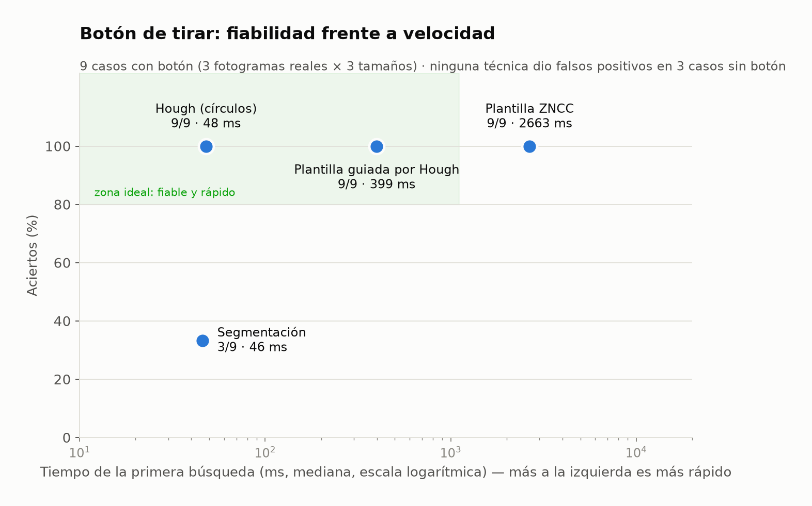
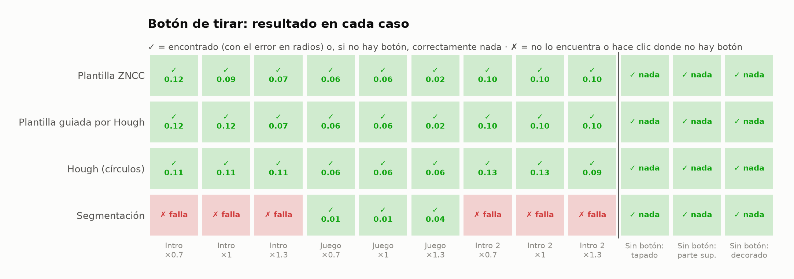
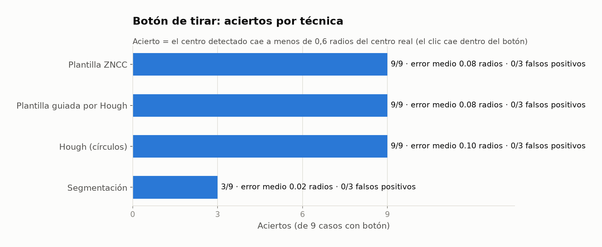
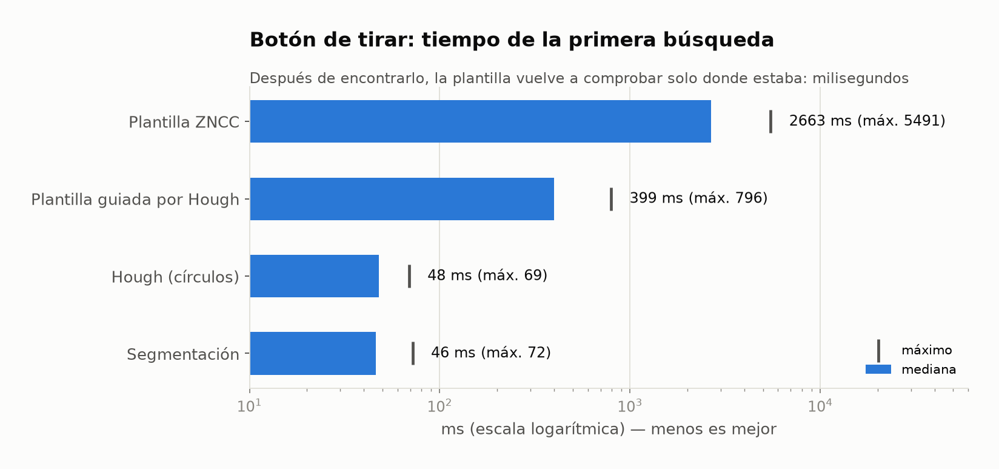
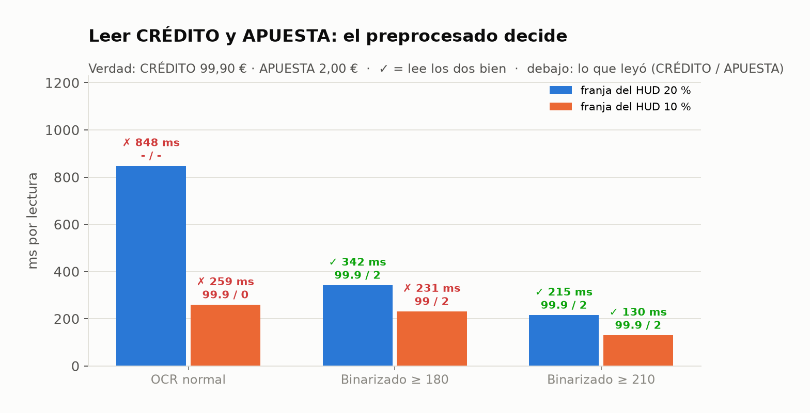
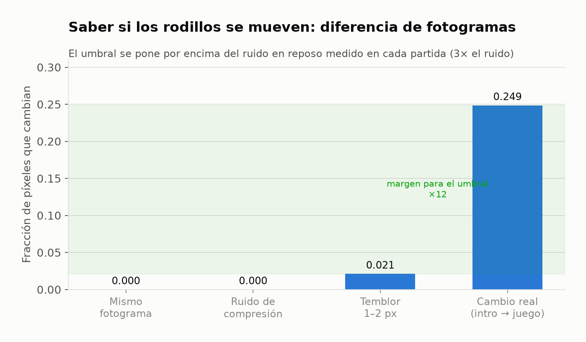

Informe 6 — Visión y OCR: qué técnica usamos para cada cosa y por qué
El checker nunca lee el DOM del juego: todo sale de los píxeles. Cada técnica se eligió midiéndola sobre fotogramas reales del juego (node scripts/bench-vision.cjs, sin navegador y sin dinero). El detalle completo está en docs/vision-approaches.md.
Resumen
| Problema | Técnica | Dato medido |
|---|---|---|
| Encontrar el botón de tirar | plantilla ZNCC guiada por Hough → Hough → tecla ESPACIO → posición calibrada | 9/9 aciertos, 0 falsos positivos, primera búsqueda ~0,4 s (plantilla sola: 2,7 s) |
| Encontrar «−» y «+» | plantilla junto al botón de tirar + afinado de los 5 mejores candidatos | «+» encontrado en vivo con una moneda tapando su borde |
| Leer CRÉDITO y APUESTA | OCR (Tesseract) con binarización del texto brillante (≥ 210) | la única variante correcta en las dos franjas del HUD; el OCR normal falla |
| Saber si los rodillos se mueven | diferencia de fotogramas con umbral sobre el ruido en reposo | ruido ≤ 0,021 frente a 0,249 en un cambio real: margen ×12 |
| Mensaje de saldo insuficiente | OCR + expresiones regulares por intención e idioma | «Fondos insuficientes…» leído en vivo, en español |
Botón de tirar: fiabilidad frente a velocidad

Resultado en cada caso
3 fotogramas reales × 3 tamaños, y 3 imágenes sin botón. El número es el error en radios del botón.



Leer el saldo: el preprocesado decide

Movimiento de los rodillos

Conclusiones
- Cada problema tiene su técnica, elegida por datos: plantilla y Hough para botones, OCR para números y diferencia de fotogramas para el movimiento.
- Combinar plantilla y Hough supera a cada una por separado: Hough dice dónde y la plantilla confirma que es el icono de Pragmatic.
- La segmentación no compensa aquí: es la más precisa cuando acierta, pero el botón se funde con el dibujo que tiene detrás (3/9).
- Lo importante es no equivocarse: todas las técnicas usadas tienen 0 falsos positivos, y el clic nunca es la prueba.
- Para leer el saldo, el preprocesado importa más que el OCR: el mismo Tesseract pasa de 0/2 a 2/2 lecturas correctas.
- La IA entrenada (YOLO, modelos de visión-lenguaje) no hace falta para este alcance. Queda como ampliación: se añadiría como un detector más de la cascada.
Intelligent Game Validation · Betsson × Malackathon 2026 · generado desde docs/reports/*.md (npm run reports:html)